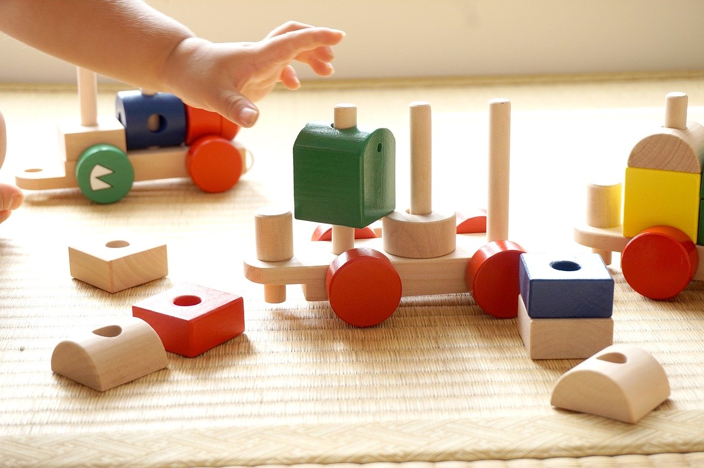

子育て中の方へのサポート
大阪マザーズハローワーク
仕事と子育ての両立や、出産・育児でブランクのある方、子どもの成長に合わせて働き方を変えたい方など 多様なニーズに応えるために平成3年7月1日に「レディースハローワーク」としてオープン。
平成18年4月1日に大阪マザーズハローワークと改称された。
育児中の方が、お子様連れでも来所しやすい環境の整備が行われている。
ハローマザー企業
ハローマザー企業とはハローワークの定めた基準をクリアした、子育てと仕事の両立に理解のある企業のこと
詳しい条件についてはこちら
安心して相談できる環境

マザーズハローワークでは、母親が安心して求職活動を行える環境作りがされている。
チャイルドスペースが確保されており、窓口で就職相談をしているあいだも、専門のスタッフがやさしく見守ってくださる。
アンパンマンのDVDなどもリクエストできる。